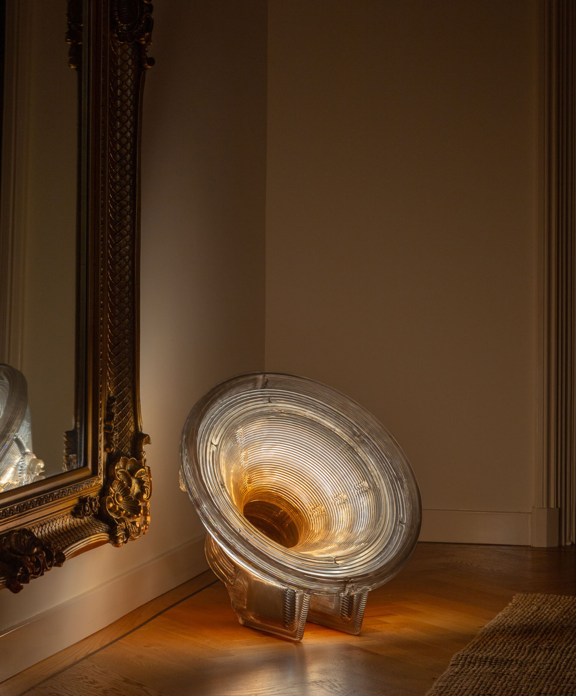
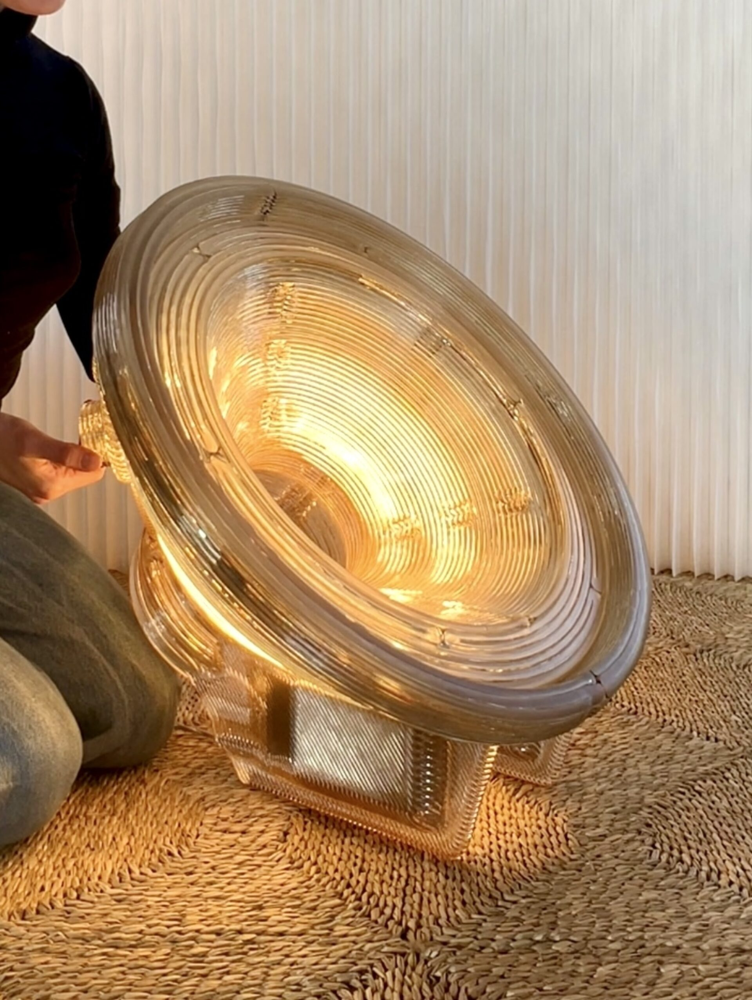

Erasmuspad 10
1052KP Rotterdam
010 285 55 55
649414@hmcollege.nl
KvK nr.: 33695059
BTW nr.: NL001234567B01
Deze lampenkappen worden gemaakt van gerecyclede cd’s. Door het licht geeft dat ook een gaaf effect. Iedere lamp is uniek omdat de cd’s in hun eigen vorm worden omgesmolten. De ontwerper van deze lamp komt uit Nederland. Studio Kooij past een zero-waste productieproces toe, waarbij restmateriaal direct opnieuw wordt gebruikt. De cd’s worden eerst omgesmolten. Zo is het materiaal steviger wanneer het is omgebogen en is het makkelijker te bewerken. Met deze smelt en buig techniek kun je iedere vorm maken die je wilt. De cd’s zijn licht doorlatend maar door hun holografisch materiaal krijg je mooie warme kleuren.
Bezoek Satellite  